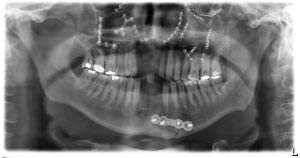

Procedure:
- When the patient is tilted in the machine, the side that is directed upward may display widening of the posterior teeth and the posterior interocclusal distance.
- On the contralateral side the interocclusal distance is narrowed.
- The side of the patient that is tilted upward will display the condyle both superior to and larger than the contralateral condyle.
- It should be noted that the tongue is not against the palate in this image and therefore portions of the maxilla, particularly in the apical aspect of the teeth, are somewhat obscured due to the air space between the tongue and the hard and soft palates.
- Please refer to the panoramic radiograph below for an example of the patient being tilted during image acquisition.

|